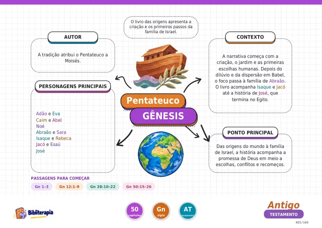
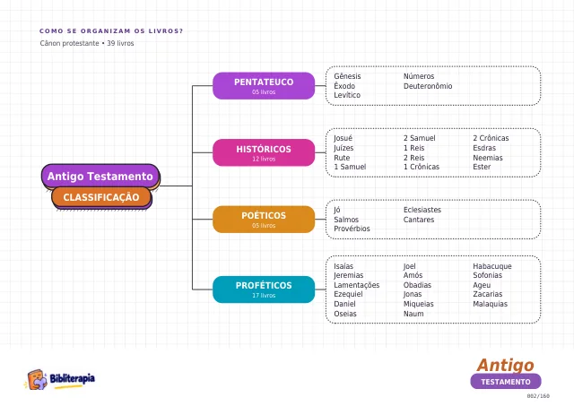
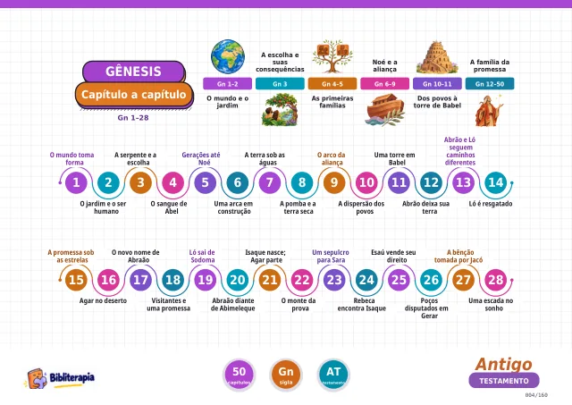

Tabela Periódica da Bíblia
Localize os livros por seção.
Já abriu a Bíblia e ficou sem saber quem era quem ou como os acontecimentos se ligavam? O Mapa Didático dá contexto à sua leitura, com mapas ilustrados de Gênesis a Apocalipse.

01 PÁGINAS REAIS DO PDF
Folheie 15 páginas internas, de Gênesis a Apocalipse. Pause na que quiser ou toque em Ampliar para ler de perto.

FOTOS DO MATERIAL
Veja as páginas impressas, os detalhes dos capítulos e como o mapa fica no computador.
02 COMO USAR O MAPA
Se os nomes se misturam ou você não sabe por onde começar, deixe o mapa aberto ao lado da Bíblia. Veja como usar os dois juntos.
Veja onde o livro se encaixa na Bíblia e conheça os personagens antes de começar a leitura.
Se perder o fio da história, consulte o resumo do capítulo para se localizar e voltar ao texto.
Reveja o que leu e use o Plano de Leitura para saber por onde continuar no seu próximo encontro com a Palavra.
03 NO PAPEL OU NA TELA
Imprima o mapa para estudar à mesa ou abra o PDF no aparelho que você já usa. Escolha abaixo como quer ver a página de Gênesis.

No tablet, você pode ampliar o mapa com um gesto e consultar os detalhes das passagens.
O produto é um PDF digital. As imagens mostram como o mapa fica na tela ou quando é impresso.
04 O MAPA NA PRÁTICA
Exemplos de uso com personagens ilustrativos. O mapa ajuda a entender o contexto e não substitui a leitura da Bíblia.
Relatos
05 OFERTA
R$ 29,90
O mapa completo + 4 materiais em PDF
Confira o valor final e as formas de pagamento no checkout da Hotmart.
Localize os livros por seção.
Estude Mateus, Marcos, Lucas e João.
Siga um roteiro de 52 semanas.
Organize seu momento de leitura e reflexão.
Opcionais no checkout: artes para caneca e marca-textos bíblicos, vendidos à parte.
06 DÚVIDAS FREQUENTES
Sim. Antes de ler um trecho da Bíblia, consulte a página do livro no mapa para entender o contexto e conhecer os personagens.
Você pode consultar o mapa do livro que está lendo. Se quiser seguir um roteiro, use o Plano de Leitura incluído.
Abra o PDF em um leitor compatível no celular, no tablet ou no computador. Se preferir, imprima páginas para consultar no papel.
Os materiais são digitais. As imagens do livro e dos aparelhos mostram formas de usar o PDF; as artes para caneca são arquivos digitais.